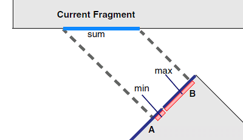
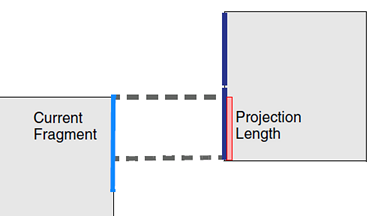
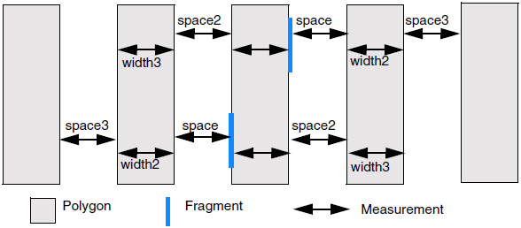

NMBIAS_MEASURE_TAG
Calibre nmOPC Tcl Scripting Commands
Creates a tag set with numeric properties.
Usage
NMBIAS_MEASURE_TAG layer [reference_layer [reference_layer]] [‑overlapLayer layer]
[‑tag tin] [‑toTag to] [‑unmoved] [‑jog_ignore max_jog] [‑projecting [length]] [‑projecting_space [length]] [‑ignore_singularity] [‑default value]
[‑resolution {sum | min | max}] [-c2c [!=45 | ==45 | >=0]]
‑measurement_type type1 ‑dist range [metric] ‑aout tag1
[‑measurement_type type2 ‑dist range [metric] ‑aout tag2
[‑measurement_type type3 ‑dist range [metric] ‑aout tag3] ]
Arguments
- layer
A required argument that specifies the name of the layer to analyze.
- reference_layer [reference_layer]
An optional argument that specifies the name of one or two additional layers for space measurements.
All layer arguments must be specified before any keyword/value arguments.
- ‑overlapLayer layer
An optional argument that specifies the name of a layer to be used for overlap and enclosure measurements.
- ‑tag tin
An optional argument that specifies a tag set to consider. By default, all fragments on layer are analyzed.
- ‑toTag to
An optional argument that specifies a tag set to measure against. Supported measurement types are projlen, space, and width. Only fragments in to from layer are used.
- ‑unmoved
An optional argument that performs the calculation using original fragment positions. If this argument is not specified, measurements are performed with the current position.
- ‑jog_ignore max_jog
An optional argument that ignores jogs that do not exceed max_jog when computing length.
- ‑projecting [length]
An optional argument that includes projecting fragments greater than length microns for ‑measurement_type width, width2, or width3. If length is not specified, all projecting fragments are included.
- ‑projecting_space [length]
An optional argument that includes projecting fragments greater than length microns for ‑measurement_type space, space2, or space3. If length is not specified, all projecting fragments are included.
- -ignore_singularity
An optional argument that inhibits measurement of fragments projecting onto each other at a single point, also referred to as kissing corners. It requires either ‑projecting or ‑projecting_space.
- ‑default value
An optional argument that changes how fragments that do not satisfy criteria are handled.
By default, if a fragment does not return a value for a measurement (for example, it is out of range), it is not included in the -aout tag set. When ‑default is specified, the fragment is included in the ‑aout tag set, and annotated with value. All ‑measurement_type sets use the same ‑default setting.
Specify value as a floating point number.
- ‑resolution {sum | min | max}
An optional argument only valid when type1 is projlen, space, or width. It specifies which measurement to return when the current fragment projects onto multiple opposing fragments.
sum — The length of the current fragment that faces an opposing edge. This is the default for projlen, and cannot be specified for space or width.
min — The shortest of the fragment lengths in the projection. In Figure 1, this is the small highlighted segment of fragment A. This is the default for space and width.
max — The longest of the fragment lengths in the projection. In the figure, this is the highlighted segment of fragment B.
Figure 1. projlen Measurement Resolution- ‑c2c [!=45 | ==45 | >=0]
An optional argument that measures fragments when they are in a corner-to-corner configuration. This configuration is defined as fragments being parallel and not projecting, with additional qualifiers:
space: both fragments are on convex 90-degree corners.
width: both fragments are on concave 90-degree corners.
enclosure: the layer fragment is on a convex 90-degree corner and the overlapLayer fragment is on a concave 90-degree corner.
enclosing: the overlapLayer fragment is on a convex 90-degree corner and the layer fragment is on a concave 90-degree corner.
By default, projection is not allowed between the fragments or corners. You can permit projection using one of the angle constraints, visualized as being on a line drawn between the two corners relative to the x-axis.
!=45 — This is the default behavior when no constraint is specified. Projection is not allowed, but the two corners do not need to have equal vertical and horizontal separation.
==45 — Only corners that would describe a line segment at a 45-degree angle are measured.
>=0 — Any orientation is allowed, but projection must be zero length.
Figure 2. Enclosing -c2c Constraints
- ‑measurement_type type1 [‑measurement_type type2 …] [‑measurement_type type3 …]
A required argument that specifies the calculation to perform. The second and third ‑measurement_type arguments are optional, and can place restrictions on the first.
The type can be one of the following:
enclosing — Measured from the inside of the fragment on layer to the outside of a fragment on ‑overlapLayer.
enclosure — Measured from the outside of the fragment on layer to the inside of a fragment on ‑overlapLayer.
fraglength — Measured along the length of the current fragment.
length1 — Measured along the edge containing the current fragment. It can span multiple fragments. (There is no length2 keyword.)
overlap — Measured from the inside of the fragment on layer to the inside of a fragment on ‑overlapLayer.
pitch — Returns space + width.
projlen — Measures the projection of fragments on layer or in the ‑tag tag set to a facing fragment or fragments. The facing fragments are from a reference layer or the layer fragments in the ‑toTag tag set. (Fragments from other layers are ignored.) When both ‑tag and ‑toTag are specified shielding is ignored.
Figure 3. Projecting Length (projlen)The projlen measurement type may optionally specify ‑resolution to determine which measurement is returned when the projection covers more than one facing fragment. (See Figure 1.)
sidespace — Measures the space for the edge to the side or sides of the current fragment. If the current fragment is not corner adjacent, sidespace is 0. If the current fragment is a line end and has two corners, sidespace is the smaller of the two values.
space, space2, or space3 — Measured from the outside of the fragment to the outside of a facing fragment.
width, width2, or width3 — Measured from the inside of the fragment to the inside of a fragment on the same polygon.
Figure 4. Space2, Space3, Width2, and Width3type2 can be only space2 or width2, and requires that type1 be width or space respectively.
type3 can be only space3 or width3, and requires that type2 be width2 or space2, respectively.
- ‑dist range
A required argument that specifies how far to search for the opposing fragment. Values are in microns. The range applies to fragments in the tin tag set, or if ‑tag is not specified, all fragments on layer. It does not apply to fragments in the to tag set or reference layers.
The ‑dist settings when using two ‑measurement_type specifications can be different.
- metric
An optional argument that specifies the shape of the measurement region. Allowed values are opposite, opposite extended distance, and euclidean. The default is opposite.
If used with type1 of “space” or “width” and ‑resolution, only the opposite metric is permitted.
- ‑aout tag
A required argument that specifies the name to give the tag set containing fragments from layer that satisfied the measurement. The fragment is also annotated with the corresponding measurement value in microns.
This argument can also be written as “‑out ‑annotated tag.”
Description
This optional command classifies fragments within the input tag set (by default, all fragments on the layer) with a specified measurement type. If the measurement is not consistent along the fragment’s length, the smallest measurement is annotated to the fragment.
Annotations can be output to DFM RDBs and OASIS files. Annotations can also be read by NEWTAG expression.
Examples
See also “Example 3” in OUTPUT_SHAPE for the use of NMBIAS_MEASURE_TAG with OUTPUT_SHAPE and setlayer denseopc.
Example 1: Layer Only
This example measures the width of all polygons on the layer poly and places the property in the tag set “width_annotation.”
NMBIAS_MEASURE_TAG poly -measurement_type width dist 0.07 opposite \
-aout width_annotationExample 2: Layer and Tag
This example measures the length of the edges for the fragments in the tag set “inTag” and places the measurement in the tag set “length1_annotation.” The tag set “inTag” must be created by a NEWTAG command before NMBIAS_MEASURE_TAG.
NMBIAS_MEASURE_TAG poly -tag inTag -measurement_type length1 dist 0.035 \
-aout length1_annotationExample 3: Two-Layer Measurement
This example measures the offset between a main feature and SRAF by doing a space measurement with two layers, poly and assist.
NMBIAS_MEASURE_TAG poly assist -measurement_type space dist 0.1 \
-aout offset